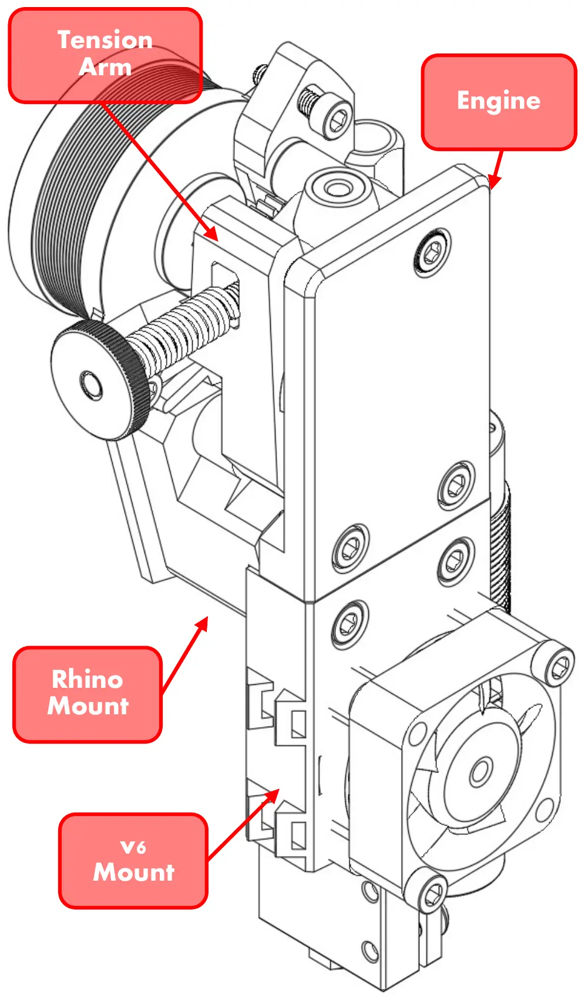

Direct-drive 3D printing, with profiles for 0.4 mm and 0.8 mm nozzles in OrcaSlicer. E3D v6 Volcano hotend at 24 V, BMG drive gear and 1.75 mm filament.
| Function | 3D printing (0.4 and 0.8 mm nozzles) |
| Slot | 1 |
| Set up a job with | Slicer start G-code (START_JOB) |
| Outputs in Klipper | Hotend heater, hotend fan, part-cooling fan |
| Pin no | Description | Board pin |
|---|---|---|
| 1 | 24 V hotend | PA2 |
| 2 | 24 V hotend | |
| 3 | Thermistor | PF4 |
| 4 | Thermistor | |
| 5 | 24 V hotend fan | PE5 |
| 6 | 24 V hotend fan | |
| 7 | Stepper | A1 |
| 8 | Stepper | A2 |
| 9 | Stepper | B1 |
| 10 | Stepper | B2 |
| 11 | ||
| 12 | ||
| 13 | Probe | |
| 14 | Probe | |
| 15 | Probe | PG10 |
| 16 | ||
| 17 | ||
| 18 | ||
| 19 | ||
| 20 | ||
| 21 |

BlockOne supersedes the Jack Rabbit print head in the repository; the Jack Rabbit files there are outdated. Its materials cover 0.4 and 0.8 mm nozzles.
| Qty | Description |
|---|---|
| 3D-printed pieces: | |
| 1 | BlockOne Rhino Mount |
| 1 | BlockOne Engine |
| 1 | BlockOne Tension Arm |
| 1 | V6 Mount |
| Off-the-shelf hardware: | |
| 1 | BMG big gear and shaft |
| 1 | 625zz sealed bearing |
| 2 | MR185 sealed bearing |
| 3 | 3 × 5 × 7 brass sleeve bearing |
| 1 | 24 V E3D v6 Volcano hotend assembly |
| 1 | J4-HV inductive proximity sensor |
| 1 | 25 mm NEMA 14 stepper motor |
| 1 | 30 × 3 mm toy shaft |
| 1 | 4 × 8 × 25 mm medium-duty (bed) spring |
| 1 | 21W4 male socket connector |
| Fasteners: | |
| 6 | M3 × 20 mm socket head cap bolt |
| 1 | M3 × 30 mm socket head cap bolt |
| 6 | 2 × 6 × 6 mm M3 square nut |
| 1 | M5 × 12 mm socket head cap bolt |
| 1 | M4 × 50 mm socket head cap bolt |
| 1 | M4 × 2 mm thumb nut |
| 1 | M4 washer |
| 7 | M3 washers |
| 5 | Small zip ties |
| 1 | Medium zip tie |
| Date | Note |
|---|---|